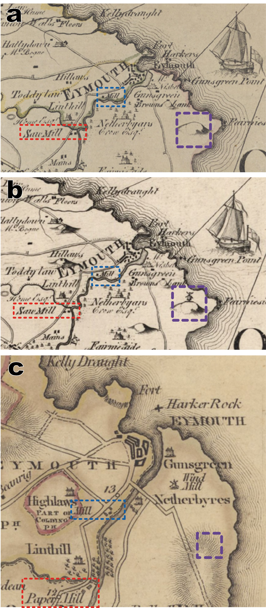

Project
Accuracy and Georeferencing
Large-scale county maps are incredible historical resources and arguably offer the most comprehensive source of spatial information on milling at the regional to national-level in Britain outside of documentary evidence for insurance companies and related to parliamentary inquiries acts in the mid-19th century. Yet, like most historical resources, early maps are the cumulative product of their age and medium: with notable differences depending on the time and length of survey, the scale, style and quality of engraving, the quality of preservation and curation, and later scrutiny by researchers.1
Gaps and Bias
While maps certainly offer clues concerning the distribution and type of mills throughout the union at various times, we recognise that notable gaps and biases in the private county map surveys certainly exist. The choices leading to the simplification of a real landscape into a legible map can speak volumes about those involved. For example, the individual behaviour of the original surveyors to include particular features while others did not, or the later choices by engravers to append (or not) missing information for reissues of county maps, present intriguing lines of inquiry concerning the lives and decisions of people in the past tied to these collections.

Figure 7. (a) and (b) Two copies of a map of Berwickshire published by Capt. Andrew Armstrong, his son Mostyn Armstrong, and engraved by A. Bell in 1771. An eagle-eyed viewer might spot some differences in each engraved map however! There are missing hills and a missing windmill (which did exist)! (c) Compare this with John Blackadder’s map published in 1797 from the same region which did include a windmill between Gunsgreen and Netherbyres but not the windmill on the hill south of Netherbyres. Is this the same mill or a different mill? Also note the change in function of the mill south of Linthill from a sawmill to a paper mill. Sources: (a) Armstrong, A. and Armstrong, M., 1771, Map of the county of Berwick: London, s.n., 1 map on 4 sheets. Shelfmark: EMS.s.316. View map. (b) Armstrong, A. and Armstrong, M., 1771, Map of the county of Berwick: London, s.n., 1 map. Shelfmark: Newman.528. View map. (c) Blackadder, J., 1797, Berwickshire, from actual survey: Edinburgh, 1 map. Shelfmark: Newman.1041. View map
Number and Distribution of Historic Mills
This resource should be used as a foundation for further work. Early county maps are only one type of resource to study mill numbers and distributions. We recommend that mill numbers from early maps offer robust but reliable minima that are at the same order of magnitude of other estimates captured through other documentary and field evidence. Very few mills are listed as derelict, ‘ruined’, ‘burnt’ and ‘disused’ in our database, such that it is likely that surveyors made little distinction between active or abandoned mills at the times of survey.
Georeferencing and Spatial Accuracy
Note: You may find that the locations of many mills may not coincide exactly with mill locations shown on later Ordnance Survey (OS) maps in the viewer. This could be due to several reasons we suggest below.
Distortion:
Given the relative accuracy of the instrumentation that informed the early surveys behind early county and Roy Military maps2, sometimes the information held within early maps sheets are distorted to reality. This is unfortunately why we have chosen not to include the Roy Highland and Lowlands map sheets you can see in the Roy Viewer, or digitised and georeferenced county map sheets held by the NLS as background options in the Mills of Britain viewer. However, due to the spatial relationship between many mills and long-lived features, such as the bends of rivers, crests of hills, or intersections of toll roads, the relative positions of many mills can be ascertained even from map sheets that do not necessarily accord with reality.
Destruction and Rebuilding:
Mill buildings lived a hazardous existence and were prone to damage by fire and flood. While any one mill site could be occupied for decades to centuries, the lifespan of a mill building was typically much shorter. Rebuilding and even expansion of mills could also be expected to shift the location, if only slightly.
River avulsion, canalisation and channelisation:
The river channel upon which watermills were sited could have naturally migrated or moved through time. While river channel migration can be a very slow process, some rivers may have avulsed, or changed channel more rapidly, during a watermill’s lifespan. This is far less likely to affect the position of mills compared to the artificial canalisation and river channelisation by people.3 Straightening or rerouting of rivers to improve navigation was a common practice across Britain, especially over the last 300 years before major roads and rail were constructed and improved.4 If mills were rebuilt following changes in network layouts, some mill records may document this.
Manual Error:
Besides distortion, much of the location error is likely due to manual error. We suggest that mill locations are generally within about 500 metres of their noted location by cartographers. This primarily accounts for the distortion of early maps and our own manual geolocation at a regional- to national level. Importantly, however, this assumes of course that the original surveyors and engravers making the map recorded the mill location accurately—which was not always the case! Often, to make a map more legible and/or pleasing to the eye, a cartographer had to portray features that did not necessarily accord with real-world proportions or location. "The prime role of any map is to convert the messiness and infinite variety of an actual landscape into an artificially simplified model".5
It is possible that we may need help ‘nudging’ some mill locations in the future—so please stay tuned!
Notes
- Smith, D., 1990, The representation of industry on large-scale county maps of England and Wales 1700-c.1840: Industrial Archaeology Review, XII, 2, pp. 153-177.
- Skelton, R.A., 1967, The military survey of Scotland 1747-1755, Scottish Geographical Magazine, 83,1, pp. 5-16; Whittington, G., 1986, The Roy map: The protracted and fair copies: part one, Scottish Geographical Magazine, 102, 1, pp. 18-28; Harley, J.B., 1965, The remapping of England, 1750-1800: Imago Mundi, 19, 1, pp. 56-67; Worms, L., 2004, The maturing of British commercial cartography: William Faden (1749-1836) and the map trade: The Cartographic Journal, 41,1, pp. 5-11.
- From ca. 1760 to 1830, navigable inland waters expanded from 1,400 miles to 4,100 miles following a series of Canal Acts. See also the Online Historical Atlas of Transport; Satchell, M., 2017, Navigable waterways and economy of England and Wales 1600-1835 – Working Paper; Bogart, D., 2017, Turnpikes, canals, and economic growth in England and Wales – Working Paper
- Shaw-Taylor, L. and You, X., The development of the railway network in Britain 1825-1911 – Working Paper
- Bignell, B., 2013, Mapping the Windmill: London, Charles Close Society, 307 p